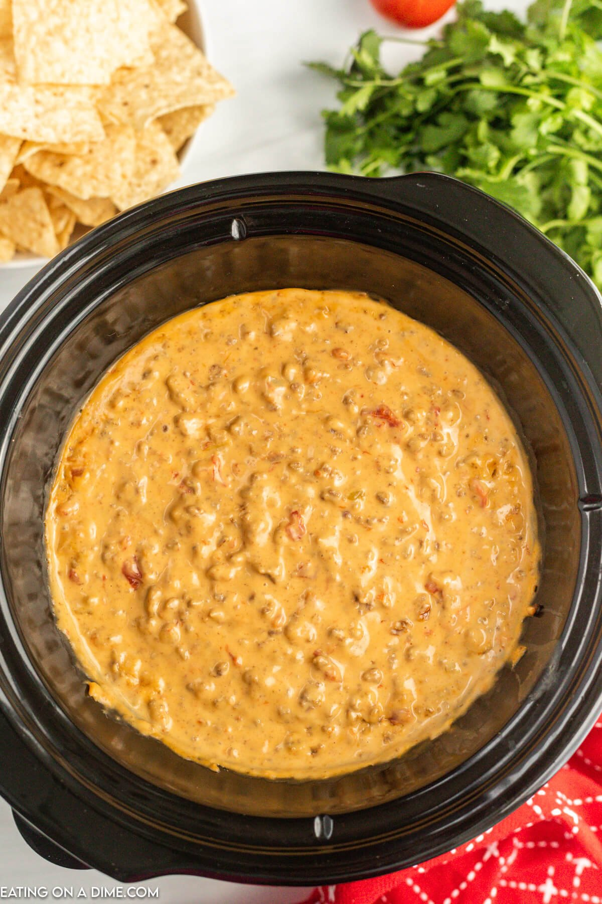

Crock Pot Rotel Dip Recipe

This is the Best Cheese Rotel Dip
A go to appetizer for parties, game day and any time we want something amazing! This dip is cheesy and delicious for an instant crowd pleaser.
Ingredients
- Ground Beef
- Velveeta Cheese
- Rotel
Recipe
- In a large Skillet brown the ground beef. Drain any fat.
- Dice the Velveeeta cheese into small pieces and place in a 3-5 quart crock pot.
- Place the browned browned ground beef on top.
- Pour both cans of diced tomatoes with green chiles on top.
- Place the lid on the crock pot and cook on low for 2 hours or high for 1 hour until cheese is melted (stirring occasionally).
- Serve warm with tortilla chips and enjoy!